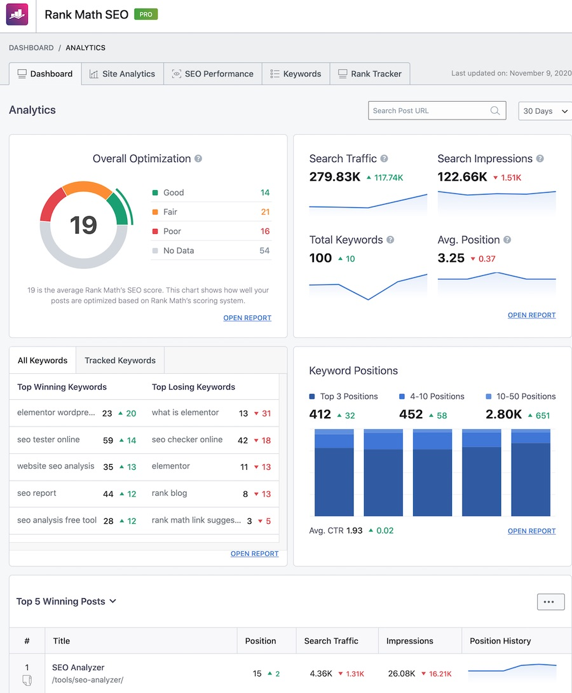
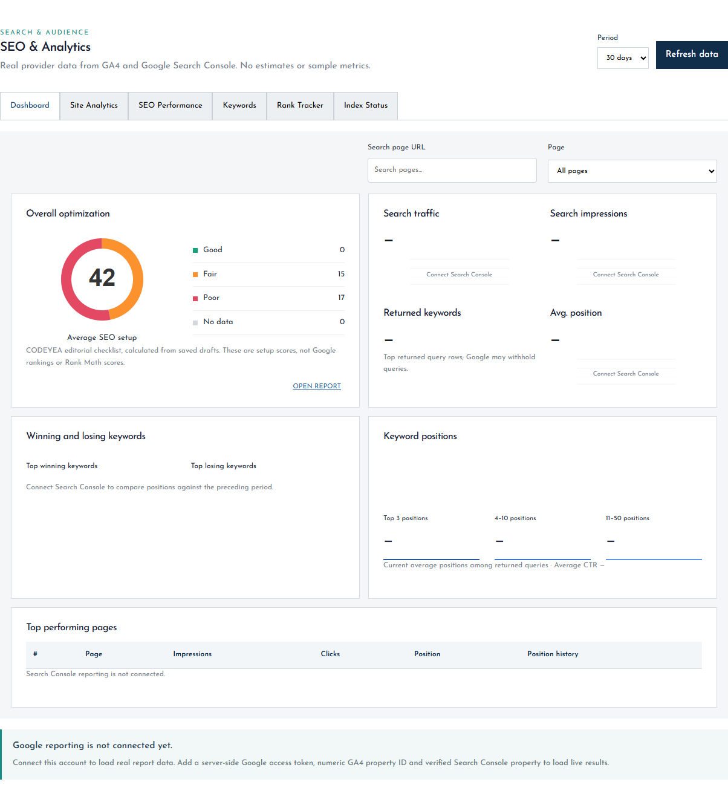
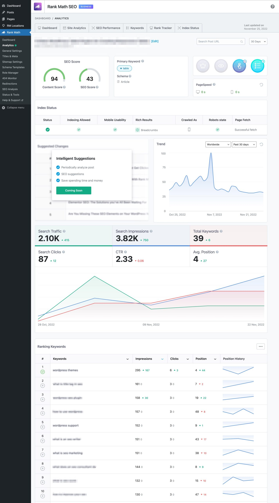
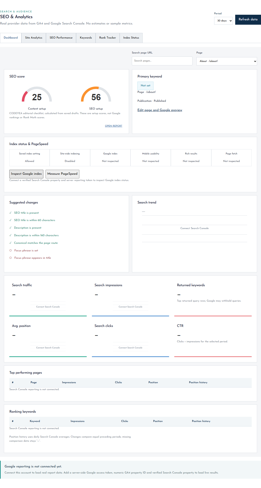


افتح لوحة الإدارة الفعلية ثم اختر SEO & Analytics.
الصور المقابلة مأخوذة من لوحة الإدارة المنفذة. لم يتم ربط Google في البيئة المحلية، لذلك تظهر حالة الاتصال بدل أرقام افتراضية. درجات إعداد SEO محسوبة من حقول المسودات، وليست درجات Rank Math أو ترتيب Google. حافظنا على خط CODEYEA والزوايا الحادة.




النصوص، إظهار الأقسام، الروابط، صور الخلفيات والهيروز، والنصوص التي يولدها JavaScript. التعديلات تحفظ في المسودات والإصدارات؛ النشر عملية مستقلة.
